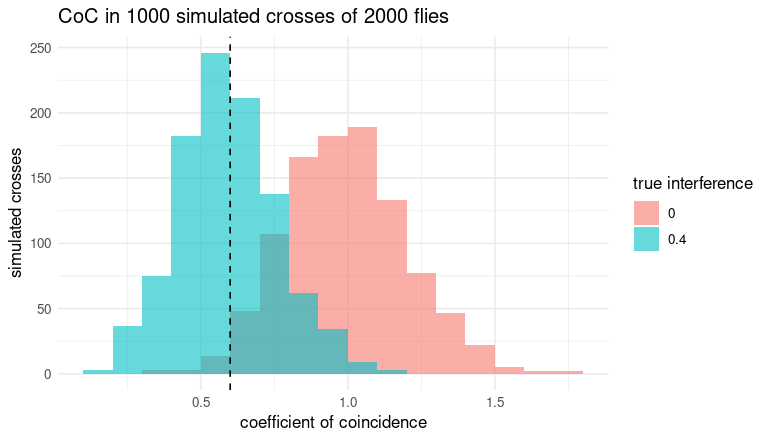

Exercise in R: three-point crosses
Goal
By the end of this exercise you should be able to:
- store the 8 classes of a three-point cross as a tibble and pick out the parental and double crossover classes with
slice_max()andslice_min(); - write a function that, for a given gene order, returns the distances, the expected DCOs, the CoC and the interference as a one-row tibble;
- run that function over all three possible orders with
map(), stack the results withlist_rbind(), and pick the order where the double crossovers are rarest; - simulate three-point crosses to see how noisy the coefficient of coincidence is.
Before you start
This page builds on the by-hand part of the Exercise, so do that first. You need the packages readr, dplyr, purrr and ggplot2. Download drosophila_v_cv_ct.csv and maize_lg_gl_bm.csv and save them in a data/ folder of your R project. Both are invented teaching data (see data/README.md); the fly file holds the lecture’s example.
library(readr)
library(dplyr)
library(purrr)
library(ggplot2)Tasks
You already know map_dbl() (Extensions to Mendel), which calls a function for each element of a list and returns a number for each. This unit’s new idiom is a function that returns a one-row tibble, called for each element with map(). map() returns a list of tibbles, one per element, and list_rbind() stacks them into one tibble, with one row per input. This is how you compare one analysis under several hypotheses side by side.
R1. (the data) Read the fly data. Each row is one class: the alleles the offspring got from the heterozygous female (+ = wild type) and the count n. Compute N, and use slice_max() and slice_min() to pull out the two most common and the two rarest classes. (The first n in slice_max(n, n = 2) is the column; the second says how many rows to keep.) Which gene differs between the rarest classes and the parentals?
fly <- read_csv("data/drosophila_v_cv_ct.csv") |> select(-note)
fly
N <- sum(fly$n)
N
fly |> slice_max(n, n = 2)
fly |> slice_min(n, n = 2)R2. (classify the classes for one order) Take the most common class as the reference parental chromosome. For each gene, TRUE means the offspring got the allele from the same chromosome as the reference. A crossover between two neighbouring genes shows up as a change from TRUE to FALSE (or back). Classify each class for the order cv–ct–v with case_when(), and add up the counts per class type.
parental <- fly |> slice_max(n, n = 1)
fly2 <- fly |>
mutate(cv_same = cv == parental$cv,
ct_same = ct == parental$ct,
v_same = v == parental$v,
region1 = cv_same != ct_same, # crossover between cv and ct
region2 = ct_same != v_same, # crossover between ct and v
class = case_when(region1 & region2 ~ "DCO",
region1 ~ "SCO cv-ct",
region2 ~ "SCO ct-v",
TRUE ~ "parental"))
fly2 |> select(v, cv, ct, n, class)
fly2 |> group_by(class) |> summarise(n = sum(n))Check the four totals against the lecture.
R3. (one function, one order) Write a function three_point(df, order) that does R2 for any data frame and any order (a character vector of the three column names, left to right) and returns the two distances in cM, the observed and expected DCOs, the CoC and the interference as a one-row tibble. df[[g]] picks the column whose name is stored in g. Note that sum(df$n[sw1]) already includes the DCOs, which have a crossover in region I too.
three_point <- function(df, order) {
top <- df |> slice_max(n, n = 1) # one parental class
same <- function(g) df[[g]] == top[[g]] # allele from the same chromosome as top?
sw1 <- same(order[1]) != same(order[2]) # crossover in region I
sw2 <- same(order[2]) != same(order[3]) # crossover in region II
N <- sum(df$n)
r1 <- sum(df$n[sw1]) / N # SCO I + DCO
r2 <- sum(df$n[sw2]) / N # SCO II + DCO
n_dco <- sum(df$n[sw1 & sw2])
exp_dco <- r1 * r2 * N
tibble(order = paste(order, collapse = "-"),
dist1 = 100 * r1, dist2 = 100 * r2,
n_dco = n_dco, exp_dco = exp_dco,
coc = n_dco / exp_dco, interference = 1 - coc)
}
three_point(fly, c("cv", "ct", "v"))R4. (all three orders with map()) There are only three different orders, one for each gene in the middle (reading a map backwards gives the same order). Put them in a list, run three_point() on each with map(), stack the results with list_rbind(), and pick the order with the fewest DCOs with slice_min(). What happens to the CoC for the wrong orders?
orders <- list(c("ct", "v", "cv"), c("v", "cv", "ct"), c("cv", "ct", "v"))
all_orders <- map(orders, \(o) three_point(fly, o)) |> list_rbind()
all_orders
all_orders |> slice_min(n_dco)R5. (reuse: maize, and the two-point distance) Your function works for any three-point data set. Run it on the maize data of B1 over all three orders and sort by n_dco with arrange(). Then go back to the flies and compute the two-point cv–v distance, ignoring ct. Compare it with the three-point outer distance, 7.0 + 13.0 cM.
maize <- read_csv("data/maize_lg_gl_bm.csv") |> select(-note)
maize_orders <- list(c("gl", "lg", "bm"), c("lg", "gl", "bm"), c("lg", "bm", "gl"))
map(maize_orders, \(o) three_point(maize, o)) |> list_rbind() |> arrange(n_dco)
top <- fly |> slice_max(n, n = 1)
outer_rec <- (fly$cv == top$cv) != (fly$v == top$v) # cv and v in a new combination
100 * sum(fly$n[outer_rec]) / sum(fly$n)R6. (how noisy is the CoC?) The flies gave CoC = 0.60 from only 11 DCOs. Could that happen with no interference? Write simulate_tp(), which draws N offspring with sample() from the four class types (parental, SCO in I, SCO in II, DCO), with probabilities from the Background of the exercise, and returns the CoC. Its arguments r1, r2 and I have default values (as in Linkage & recombination), so simulate_tp(2000) simulates the fly intervals with no interference. Run it 1000 times with I = 0 and 1000 times with I = 0.4, using map_dbl(), and plot the two distributions.
simulate_tp <- function(N, r1 = 0.07, r2 = 0.13, I = 0) {
p_dco <- (1 - I) * r1 * r2
probs <- c(parental = 1 - r1 - r2 + p_dco, sco1 = r1 - p_dco,
sco2 = r2 - p_dco, dco = p_dco)
kids <- sample(names(probs), N, replace = TRUE, prob = probs)
n1 <- sum(kids %in% c("sco1", "dco"))
n2 <- sum(kids %in% c("sco2", "dco"))
n_dco <- sum(kids == "dco")
n_dco / (n1 / N * n2 / N * N) # the CoC
}
set.seed(33)
simulate_tp(2000)
coc_sims <- tibble(I = rep(c(0, 0.4), each = 1000)) |>
mutate(coc = map_dbl(I, \(i) simulate_tp(2000, I = i)))
coc_sims |> group_by(I) |>
summarise(mean = mean(coc), low = quantile(coc, 0.025), high = quantile(coc, 0.975))
ggplot(coc_sims, aes(x = coc, fill = factor(I))) +
geom_histogram(binwidth = 0.1, boundary = 0, position = "identity", alpha = 0.6) +
geom_vline(xintercept = 0.60, linetype = "dashed") +
labs(x = "coefficient of coincidence", y = "simulated crosses",
fill = "true interference",
title = "CoC in 1000 simulated crosses of 2000 flies") +
theme_minimal()
coc_sims |> filter(I == 0) |> summarise(p_as_low = mean(coc <= 0.604))What fraction of the crosses without interference give a CoC as low as the flies’ 0.60? How would the spread change with 500 flies instead of 2000?
Solutions
All output below is from Rscript --vanilla run in the unit folder. read_csv() also prints a short column summary, left out here.
R1.
# A tibble: 8 × 4
v cv ct n
<chr> <chr> <chr> <dbl>
1 v + + 812
2 + cv ct 799
3 + + + 128
4 v cv ct 121
5 + + ct 66
6 v cv + 63
7 v + ct 6
8 + cv + 5
[1] 2000
# A tibble: 2 × 4
v cv ct n
<chr> <chr> <chr> <dbl>
1 v + + 812
2 + cv ct 799
# A tibble: 2 × 4
v cv ct n
<chr> <chr> <chr> <dbl>
1 + cv + 5
2 v + ct 6N = 2000. The parentals are v + + and + cv ct; the rarest classes are + cv + and v + ct. Compared with + cv ct, the class + cv + differs only at ct, so ct is in the middle.
R2.
# A tibble: 8 × 5
v cv ct n class
<chr> <chr> <chr> <dbl> <chr>
1 v + + 812 parental
2 + cv ct 799 parental
3 + + + 128 SCO ct-v
4 v cv ct 121 SCO ct-v
5 + + ct 66 SCO cv-ct
6 v cv + 63 SCO cv-ct
7 v + ct 6 DCO
8 + cv + 5 DCO
# A tibble: 4 × 2
class n
<chr> <dbl>
1 DCO 11
2 SCO ct-v 249
3 SCO cv-ct 129
4 parental 1611As in the lecture: 1611 parental, 129 SCO in cv–ct, 249 SCO in ct–v, 11 DCO.
R3.
# A tibble: 1 × 7
order dist1 dist2 n_dco exp_dco coc interference
<chr> <dbl> <dbl> <dbl> <dbl> <dbl> <dbl>
1 cv-ct-v 7 13 11 18.2 0.604 0.396cv–ct 7.0 cM, ct–v 13.0 cM, 11 DCOs observed against 18.2 expected, CoC 0.60, I 0.40.
R4.
# A tibble: 3 × 7
order dist1 dist2 n_dco exp_dco coc interference
<chr> <dbl> <dbl> <dbl> <dbl> <dbl> <dbl>
1 ct-v-cv 13 18.9 249 49.1 5.07 -4.07
2 v-cv-ct 18.9 7 129 26.5 4.88 -3.88
3 cv-ct-v 7 13 11 18.2 0.604 0.396
# A tibble: 1 × 7
order dist1 dist2 n_dco exp_dco coc interference
<chr> <dbl> <dbl> <dbl> <dbl> <dbl> <dbl>
1 cv-ct-v 7 13 11 18.2 0.604 0.396The order with the rarest DCOs is cv–ct–v. With a wrong order, the “DCO” pair is really a single crossover pair (249 or 129), so the CoC is about 5: five times more “double crossovers” than independence allows, which is a sign of the wrong order. The outer distance in the wrong orders, 18.9 cM, is the two-point cv–v distance (see R5).
R5.
# A tibble: 3 × 7
order dist1 dist2 n_dco exp_dco coc interference
<chr> <dbl> <dbl> <dbl> <dbl> <dbl> <dbl>
1 lg-gl-bm 22.3 20.3 13 45.3 0.287 0.713
2 lg-bm-gl 40 20.3 190 81.2 2.34 -1.34
3 gl-lg-bm 22.3 40 210 89.2 2.35 -1.35
[1] 18.9Maize: order lg–gl–bm, 22.3 and 20.3 cM, CoC 0.29, I 0.71, as in B1. Flies: the two-point cv–v distance is 18.9 cM, against 7.0 + 13.0 = 20.0 cM from the three-point cross. The difference, 1.1 cM, is 2 × 11 / 2000: each of the 11 double crossovers hides two crossovers from a two-point cross.
R6.
[1] 0.9506833
# A tibble: 2 × 4
I mean low high
<dbl> <dbl> <dbl> <dbl>
1 0 0.995 0.626 1.43
2 0.4 0.593 0.284 0.944
# A tibble: 1 × 1
p_as_low
<dbl>
1 0.02
Without interference the CoC averages 1.0, but 95% of the crosses fall between 0.63 and 1.43. Only 2% give a CoC as low as 0.60. So the flies’ 0.60 is fairly good evidence of interference, though not overwhelming: it is a bit like a p-value of 0.02. With true interference I = 0.4, the CoC averages 0.59 but ranges from 0.28 to 0.94. With 500 flies, the expected DCO count drops to about 4.5 and the spread becomes roughly twice as wide (noise falls with \(\sqrt{N}\), as in the Mendel exercise), so one cross could hardly tell I = 0 from I = 0.4.
Where this leads
The pattern one function, many hypotheses, one tibble comes back in Human linkage & LOD scores, where you compute the likelihood of family data for many values of the recombination frequency θ and find the one that fits best. The simulation in R6 is the same idea as the χ² simulations in Probability & the χ² test: when a formula is awkward, simulate the null hypothesis.